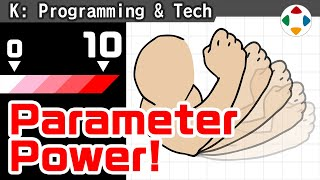
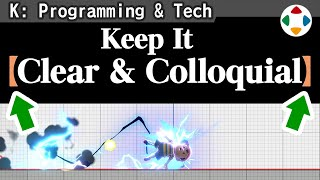
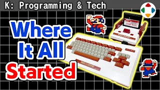
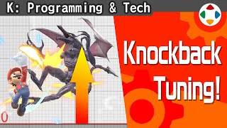
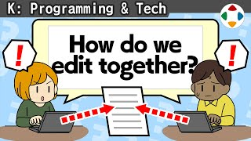
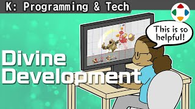
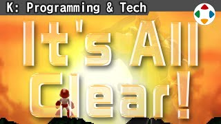

首页 / K 程序与技术
《大乱斗》的「上必殺技」在开发中叫 SpecialHi（必殺技上）。从初代起，招式文件名规则：A 键普通攻击 = Attack、B 键必杀技 = Special，数字表示强度（11/12/13 连击、3 强攻击、4 Smash），再加方向 N/Hi/S/Lw 和 Air。好处：一看就懂、排序整齐。另外：别用罗马字文件名。

写程序时，几乎所有想调整的数值都作为「参数」放到程序外。程序是骨骼，参数是肌肉。《大乱斗》参数整理在 Excel 上：可隐藏低频参数、可写公式做相对调整；通过 Excel 插件一键转换到开发机。初代和 DX 时一次转换要约 10 分钟，参数几乎全由樱井用文本编辑。

程序是处理命令的步骤书，参数是填充血肉的数字。基于个别规格书的参数（角色移动、特殊行动），要在规格书里清楚指出哪里要参数化。樱井的三条规则：①参数名用口语写；②用【】括起来；③要数值化的地方写 ○。
一定规模以上的游戏开发中，几乎所有工作都被「工单化」：存放在服务器上的数字任务，在负责人之间交接，持有工单的人就是该干活的人。工单有状态和期限，便于发现延误；调试也用工单。任务可视化如今不可或缺。

樱井进入游戏业界的最大契机是 1984 年的「家庭 BASIC」：接上红白机就能当游戏电脑用，程序容量仅 2KB，却有强大的精灵（sprite）控制功能。他用实机演示 6 行 MOVE 程序和一段带惯性的 SPRITE 程序，讲背景工具、属性限制和电池备份，并说：先动手做游戏最重要。

《大乱斗》的攻击不是单纯扣体力，而是「击飞」。攻击力越高、对方累积伤害越高，就飞得越远。本集讲与击飞有关的几项攻击参数：矢量、反应影响值、反应加算值、反应固定值。

大型团队里几百人同时做一个游戏，为何不会互相撞车？文件都放在服务器上由管理工具监视：编辑前上锁、编辑完上传再解锁。大文件只能一人编辑效率低；重复编辑时工具会尝试合并，矛盾处要手工修。理论上没问题，实际却常发生「回退」。

开发中有「调试模式（开发模式）」，用于各种测试与分析。《大乱斗》可直接设定所有人的伤害值；训练模式的击飞轨迹原本是调试功能；「今日一张」也是用它拍的。建议用一个手柄就能完成调试操作；调试功能虽多在成品中拔掉，但对开发效率影响很大，要整理维护。

在开发模式里加入「部分透明」很方便：《大乱斗 特别版》可指定斗士模型的部分，将全身或局部半透明或隐藏，用来看清动作——例如披风挡住姿势时。另外还有按元素开关显示（UI、2P、特效、阴影、后期效果）的功能，同样不可或缺。